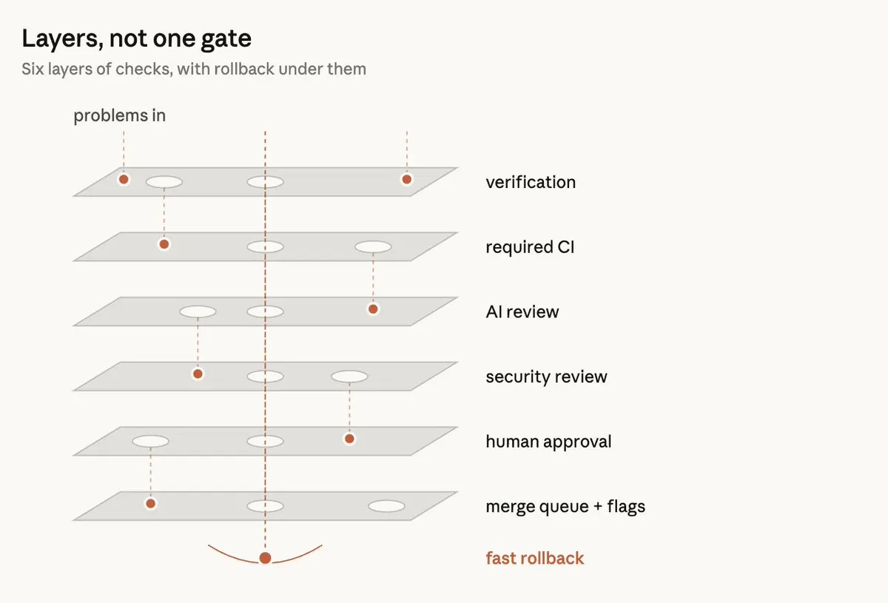

Claude 寫九成程式碼之後：Claude Code 團隊把 code review 改造成六層過濾器
導讀原文：X Article〈How the Claude Code team does code review〉——Claude Code 團隊自述其審查流程
30 秒版本
Claude Code 團隊自述：當 Claude 寫掉九成程式碼，逐行人工審查已不可能，他們的答案是不停掉 code review，而是自動化絕大多數閱讀，把人的注意力留給高風險判斷。成效：6–9 月 PR 合併量翻倍、revert 占比降逾四成；目標是大多數 PR 在「最多一個人參與（可以是作者本人）」下合併，且 revert 與事故率不升。整套系統的兩個支點：人類時間是雙側成本（審查時間＋壞碼修復時間），以及審查流程必須收斂（否則 agent 作者與 agent 審查者會無限循環）。
- 六層檢查：PR 前驗證 → AI 審查 → 可擋合併的安全審查 → 可擋的 CI → 風險分級的人工批准 → merge queue／功能旗標分階段上線，最後還有 rollback。
- 量測哲學：「有人讀過這段程式碼嗎」是壞指標；正確的問題是「這個變更可能出什麼錯，哪種檢查（自動或人工）是對的攔截點」。
- 留給人類的四件事（原文列五項，末兩項合併）：要不要做這個功能、審計危險代碼、架構審查、驗證證明與承擔責任——每個變更都有人回答。
目標重寫：code review 不是「事後檢查」，是持續的拼字檢查
背景數字先立起來：他們的 monorepo 從五月每天約 2,500 個變更，到九月超過 30,000 個；Claude Code 雖不在 monorepo，壓力同樣巨大。在這種速度下，逐行人工審查「越來越難，甚至不可能」。團隊把 code review 的目的拆成兩個：①出貨前抓到並修正 bug；②建立對 codebase 的共同理解——本文主要講前者，後者放在「團隊脈絡」一節。
核心觀念轉換有兩個。第一，「有沒有人讀過這段程式碼」是精確度很低的代理指標——真正的問題是「這個變更可能出什麼錯，哪種檢查（自動或人工）才是對的攔截點」。第二，時機變了：傳統審查是寫完、開 PR、等人看的「事後檢查」；他們把它織進工作流，像寫作時持續跑的拼字檢查——大多數變更在人類介入前，已經被 Claude 審過並修正至少一輪，常規 bug 早就被抓掉，人類注意力留給高層次的判斷。

還有一個容易被忽略的算術：人類時間是雙側成本——不只算審查花掉的時間，也算修掉壞碼引入 bug 的時間。只壓前者不壓後者，人類時間根本沒省，只是搬家。所以他們用「每 PR 的中位數人工批准數（含 p95）」「人工留言數」「PR 等人多久」量測節省，以 revert 率與事故率當護欄（量測的是人類時間，護欄是品質指標——兩者不能混）：這兩個若上升，代表時間只是被搬家，不是被省下。
六層檢查：從 PR 前驗證到 rollback
第 1 層・PR 前驗證（大部分審查發生在這裡）：要求 Claude 做出「可執行的東西」——跑測試、跑 build、把截圖跟設計比對，不是說「做完了」而是展示結果；再用一個 fresh-context 的子代理審查 diff。內部技能如 bug hunting、diff 縮減、端到端驗證、UI 對設計規範檢查。Claude Code 創造者 Boris Cherny 的估計：給 Claude 配上驗證流程，產出品質大約提升到原來的兩到三倍。反覆出現的問題則修在源頭——技能本身、lint 規則、或更新 CLAUDE.md（專案說明檔，每次審查都會載入，所以保持簡短）與 REVIEW.md（code owner 告訴審查者「這個目錄什麼重要」：定義什麼叫專案失敗、限制 nitpick、劃定忽略路徑、要求 file+line 引用、要求含數量的總結與明確的「no issues」）。

第 2 層・每個 PR 都有 AI 審查：diff 對照整個 codebase 與 PR 作者陳述的意圖——確認變更真的解決該問題、融入更大系統、不弄壞別的地方；審 bug fix 時還會找根因。這就是已對 Team/Enterprise 客戶開放的 Code Review for Claude Code（本地輕量版是 /code-review）。研究預覽以來，獲實質審查意見的內部 PR 占比從 16% 升到 54%；超過 1,000 行的 PR 多數能被抓到問題，較小的 PR 多數回報乾淨。發現會先經多代理過濾：並行找 bug、投票判定真偽、濾掉純風格/清理類（上線前先在他們自己的 PR 上做過 A/B 測試）。剩下的以行內留言呈現，按嚴重度排序，標記為 Important／Nit／Pre-existing（不讓作者背不屬於這個 PR 的鍋）；所有發現必須處理——修掉或帶理由結案，很多時候 agent 一夜之間就把問題修好、再跑一輪審查，作者回來時 PR 已經過完下一輪。
第 3、4 層・可擋合併的安全審查與 CI：code review 或安全審查任一有未結案發現時不得合併——修掉，或以簡短理由結案（誤報的處理方式）；後續 commit 解決問題時發現自動關閉。CI 是標準組合：lint、型別檢查、全平台測試、build——一個典型 CLI PR 在任何人看之前要過數十項檢查；PR 模板要求回答「怎麼測的、怎麼 revert」，Claude 可以代答，但責任在作者。
第 5 層・風險分級的人工批准：風險等級由變更本身決定（分類器判定），不是由作者身分決定；另一個分類器判斷特定變更是否需要額外批准。有些路徑永遠要多一雙眼：被 owner 標記為敏感的任何東西、任何 CI workflow 檔案。只有 repo 信任清單上的作者（通常是 repo 擁有團隊）享有寬鬆路徑，其他人一律需要第二人批准。agent 的批准不算人類批准；agent 發 PR 時，操作 agent 的人永遠算入必要審查者；一次批准只對一個 commit 有效——新 commit 無法被信任時（例如 agent 又推了 commit、或有人手工解 merge），PR 必須重新批准。
第 6 層・merge queue、功能旗標、分階段上線：merge queue 確保所有檢查在「main 加上這個變更」上跑過，防止兩個各自成功的 PR 合成一個壞掉的 main。新功能預設躲在 feature flag 後，Anthropic 員工先用——因為他們重度使用自家產品，常常比用戶先發現 regression。對外 rollout 先進 latest 頻道，stable 頻道殿後。
最後一道・快速回饋與 rollback：壞合併終究會穿過來，這是最後防線——flag 後的變更可以直接關掉不必部署；每週 on-call 輪值、事故回顧必問「哪一層該攔沒攔」。他們還沒有依事故自動收緊批准要求的 circuit breaker，但正在研究。文中有個誠實的註腳：有隊友說「放慢、減少產出能提升準確率」，但那主要是因為工作總量變少了——他們真正的優先序是更快抓到並修正問題。
讓審查者越來越好：事故當評測集，收斂是硬要求
審查系統本身也是被審查的。事故就是評測資料：團隊收集引發事故的 PR、它們的 fix-forward 與 revert，請了解 codebase 的工程師確認每個 bug 的位置與正確性，審查系統每天對這個集合跑評測；每起新事故都加進集合，審查系統的每次改動都對整個集合重新評分。
噪音要靠觀察人類反應來量：把每則審查留言分類為「修了/駁回/澄清為有意/無所謂」，並在已知乾淨的 PR 上跑審查系統，看它多常回報本來不會造成傷害的「問題」。明示的優先序：第一是抓到真 bug，第二才是減少審查輪次。文中還點出一個不對稱：人類一秒鐘就能駁回一個 nit，但 agent 作者面對審查意見的代價高得多——又一個 commit、又一輪審查。
收斂是硬要求，因為 agent 作者與 agent 審查者可能永動：他們觀察到 CLI 專案的一個 PR 一夜之間循環了五十多次（靠人工停掉，否則可能無限循環）。git blame 追查發現，審查系統反覆標記的東西約 59% 是第一次就存在的舊碼——它很少找到新 bug，只是每輪多找幾個舊的。團隊自己把事情弄糟的原因是「預設跑好幾輪審查」（每輪確實可能撈到不同 bug）；修正後開始追蹤 cycles-to-pass，並更新 re-review 規則：三輪後要求作者重新思考方法、後續只審新 diff、指定 bug 類別讓作者一次修完一類、不重報已觀察到的問題；審查 agent 也在夜間跑在現有 codebase 上，讓歷史 bug 在擴散前被找到。
人類留下來做什麼：四件事（原文五項，末兩項合併）＋「你合併的，你負責」
資深工程師停下來看一個常見錯誤，比自動化昂貴太多——但四件事仍然非人不可（原文列五項，④驗證證明與⑤承擔責任在此合併）：①要不要做（願景、品味、目標——某個自稱已解決 code review 瓶頸的團隊，對外團隊來的變更仍做人工審查，只為確認「這是對的東西」）；②審計危險代碼（計費、自動更新器、CI workflow）；③架構審查（架構決定別人跟隨的慣例）；④驗證證明與承擔責任——「如果你說不出這些檢查會漏掉什麼，別求 👍，你需要的是真正的 review」；每個出貨的變更都有人回答，無論是誰打的字。
文化面是「You land it, you own it」：合併了中小型變更、後來出錯，一般預期你自己修。這不會失控的條件：小變更好審好修好 revert；一切皆可 revert（flag、revert、分階段上線能在幾分鐘內逆轉多數錯誤）；爆炸半徑定門檻——越貴的程式碼越多雙眼；telemetry 與內部使用快速浮現 regression；而且不是追罪遊戲——修的人擁有它，因為他脈絡最全；事故回顧針對系統。加上團隊公開在開放頻道工作、互相看得到彼此在建什麼、非 code owner 也會給回饋——這種開放性是不需要每行設閘仍保持高品質的一大原因。
還有兩節值得留意。換向要趁早：agent 讓開新工作變便宜，但有些路不該走——有人 call out 是死路時，作者直接關 PR 或換實作；正因為寫起來便宜，關掉也不心疼；關鍵是在 thread 早期轉向，而不是等 PR 定稿才擋。團隊脈絡的新答案：閱讀同事的 diff 一向是理解 codebase 的方式，機器把閱讀做掉之後怎麼辦？他們沒有正式機制——沒有人腦中裝著 Claude Code 的完整模型，也不覺得需要；想了解某塊，就叫 Claude 當場生成那個切片的 explainer（幾分鐘、永遠最新），有些人還讓它做出可視化的小 artifact、用自己偏好的風格教學。
閱讀前提。這是 X Article，內文為 Claude Code 團隊第一人稱自述；由 Addy Osmani 的帳號發布（文末自註「A rewrite of our original article and checked with Pangram」，發文帳號與寫作團隊的確切關係原文未說明，轉述時以「Claude Code 團隊」為主語）。文章內數字皆為該團隊自述之內部量測（未附方法論細節）；統計卡的 232 萬瀏覽／3.3 萬書籤是 X 平台互動數據（2026-10-28 查核），非文章內文數據。「90% 程式碼由 Claude 撰寫」是引用團隊先前說法。文末附「如何落地」清單（PR 前/PR/批准/合併後各階段的具體步驟）與路線圖：產品原則是人類做最終批准，但在自家 repo，owner 已在決定哪些低風險變更可在自動檢查通過時自動合併——且這條界線會繼續演化。
帶走三件事
審查的單位是「風險」不是「程式碼」。六層檢查的本質是把「有人讀過嗎」換成「哪層檢查攔哪類錯」——風險由變更決定而非作者、敏感路徑永遠多一雙眼、人類注意力只花在機器還不能回答的地方。
自動化審查會失敗於「不收斂」，不是「不準」。agent 作者×agent 審查者可以一夜循環五十多次、59% 是在翻舊帳——限制輪次、聚焦新 diff、指定 bug 類別、事故進評測集每天重評，才是讓審查者越來越好的機器。
人類時間是雙側成本，護欄是 revert 率。省下審查時間卻賠上修 bug 時間，等於沒省——目標（最多一人參與、revert 不升）與量測（中位數批准數、留言數、等待時間；護欄是 revert 與事故率）互相鎖住，這才是「減法設計」能不翻車的原因。
五個關鍵詞
同一主題的其他館藏
導讀為本站編輯內容（AI 摘解自原文，非官方文件）；引述數據均出自原文（團隊自述之內部量測），小標與分節為編輯整理。人物觀點非官方第一手公告，為站內新設主題。內容經對照原文的獨立事實審查後發布。